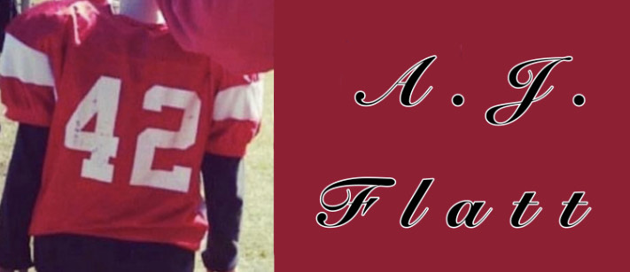

Project 42 is a program designed to keeping A.J.'s name and memory alive. Learn more about the project and its purpose in the about section!

This is an organization we have created to honor the life of A.J. Flatt, who left this Earth in 2021 at just 16 years old. Learn more about A.J. by clicking on the About A.J. section. Learn about his school life and hobbies that this programs strives to help people remember.
We at Project 42 have few ways for people to donate and highly encourage you to do so! In honor of A.J. there's a donation section you can click on above. This will lead you to where you can donate electronically. Donations can be through CashApp, Paypal, and any Cadence Bank location. To learn more about donating and other upcoming fundraisers, please check out the donations section. We thank you for your support!
When looking into the Scholarships section, you'll find two different oppertunities for annual scholarships to be given to (2) CCHS seniors. if you are intrested in a scholarship as a senior or senior in band, please check out this section of more details about the sign up requirements.
Contact Us!
For more information, please check out Project 42's FaceBook page for updates on fundrasiers or more informatation on the Project itself and its goal to keep A.J.'s memory alive. Thank you for your support!